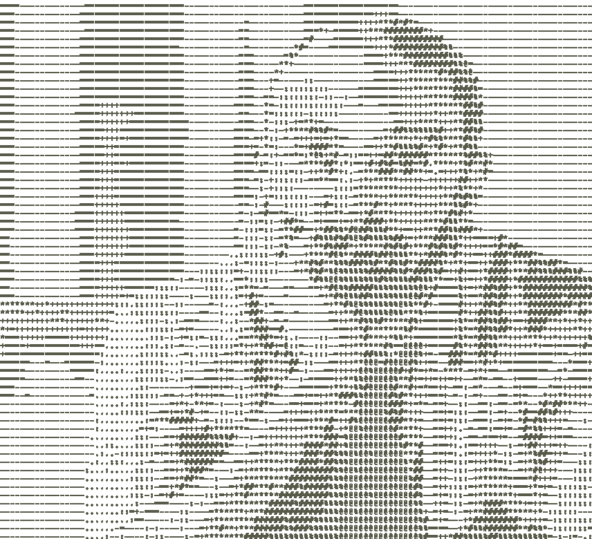
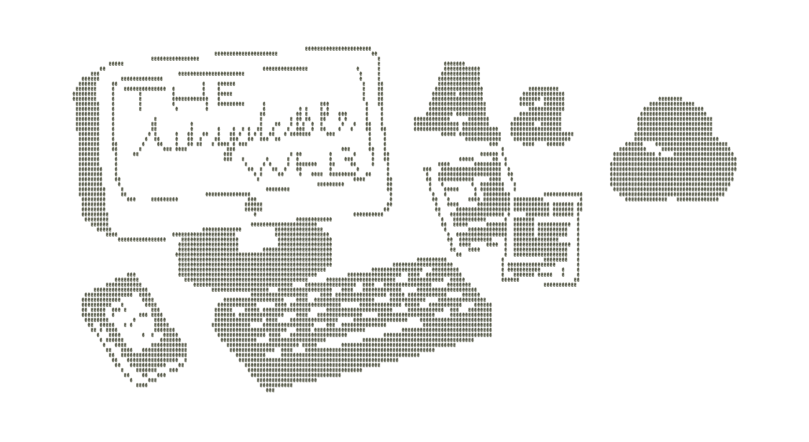
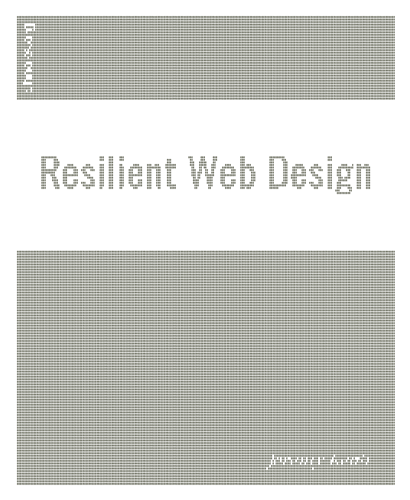

Nel duemila la School of Visual Arts ha tolto la parola “grafica” dai suoi corsi. Resta il graphic design, ma il metodo di Falcinelli per esplorare il design è la forma e la voce. Le riflessioni sul disegno delle interfacce sono così articolate e vaste. graphic designer e web designer Nel dizionario di Falcinelli “filosofia”, “graphic design” e “web design” sono usati in un senso esteso e in un senso ristretto, arbitrariamente. Il web design, evoluto con HTML, è diventato in UE UX, UI e product designer. blog e riviste web Gli articoli web design sono votati al dettaglio tecnico del web design e al ruolo dell’autore inteso come design- er. L’UX Collective ha aperto il progetto DOC per fare 1’esegesi del significato dei perché nella grafica. Manca Web Usability di Jakob Nielsen, ma anche Don’t Make Me Think e The Elements of User Experience. disagio tecnologico Parlando di disagio tecnologico (1998), Cooper introduce l’“attrito cognitivo”, anticipando che il design sarà sempre più funzionale e obiettivo oriented, e che la qualità sarà misurata sistematicamente, elità sulla linea di produzione.

dao of web design Il Dao of Web Design (2000) di John Allsopp ha un’essenza polemica e programmatica e non trascura il problema del responsive web design, nel quale sono inquadrati gli obbiettivi di ciascuno. Per Allsopp il nuovo medium ha spesso imitato i predecessori, portando avanti la tesi che il controllo della tipografia e delle altre parti del design cartaceo non vale più e qui si presenta una maggiore flessibilità e una invenzione progettuale più diretta. web design typography Ha discusso, nel simposio, Oliver Reichenstein nel suo famoso articolo Web Design is 95\% Typography (2006), affermando che la tipografia è il novecento cinque per cento di un web design e i critici non mancano di argomentare che la tesi non fa che alzare al cimento le stesse questioni. understanding web La ricerca del web design di Jeffrey Zeldman del 2007 causa una serie di significati. La scrittrice spiega che il web design è la creazione di un ambiente digitale che faciliti il rapporto umano, si adatti ai diversi contenuti e ci racconti molte storie individuali. i am not a web designer Nel 2010 Jessica Hische ci apprende di non essere una web designer: spiega come il web design significhi conoscere tante cose e collaborare con gli sviluppatori, e che conoscere a menadito l’HT HL e il CSS non basta.

what screens want Nel suo What Screens Want, Frank Chimero si ingegna a complicarci il problema della nostra non intelligenza verso lo schermo per dimostrare, a brani di cotone, che lo schermo, sebbene abbiam veduto e visto e vediamo sempre i contorni non è che un flusso continuo, per dare ragione degli strani intrecci di colori di Hockney. resilient web design Nel suo ebook Resilient Web Design dell’anno 2016, Jeremy Keith, esplora il nuovo valore del web design tenendo conto della migliore soluzione che preveda dal web design tradizionale, che pone l’operazione del designer, in confronto del mezzo, 2016 adattare il suo lancio alla varietà dei formati degli schermi, alla varianza della loro grandezza e alla diversità dei tempi richiesti dalla comunicazione. visual design is not a thing Mark Boulton scrive che il visual design è un vezzo: critica i neologi del web design e propone di chiamarlo pittura grafica d’arte perché il progettista di siti web non fa altro che il pittore, i messaggi e il pubblico si affer- mano, e deve conoscere le meccaniche del lavoro. atomic design Brad Frost riflette sulla composizione delle “pagine web” e le confina in una ripartizione di componenti.
